Abraham Lincolnwiki-fr
Abraham Lincolnwiki-fr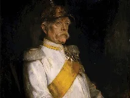
Otto von Bismarckwiki-fr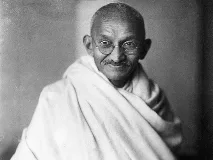
Gandhiwiki-fr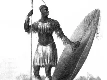
Shakawiki-fr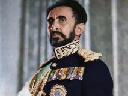
Haïlé Sélassiéwiki-fr
Victoriabing
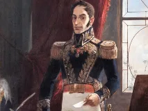
Simón Bolívarwiki-fr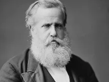
Pedro IIwiki-fr
George Washingtonwiki-fr
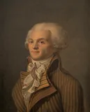
Maximilien de Robespierrewiki-fr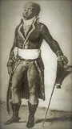
Toussaint Louverturebing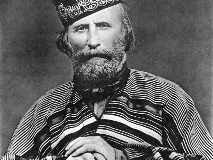
Giuseppe Garibaldiwiki-fr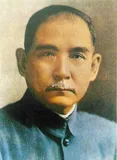
Sun Yat-senwiki-fr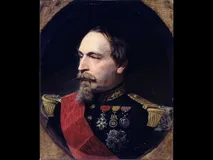
Napoléon IIImemo:chefs_etat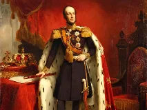
Guillaume IIwiki-fr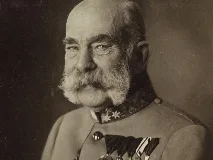
François-Joseph Ierwiki-fr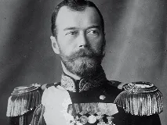
Nicolas IIwiki-fr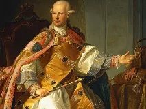
Léopold IIwiki-fr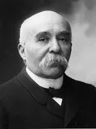
Georges Clemenceauwiki-fr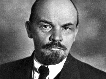
Vladimir Léninewiki-fr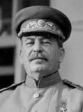
Joseph Stalinewiki-fr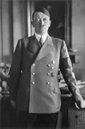
Adolf Hitlerwiki-fr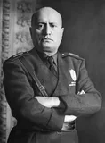
Benito Mussoliniwiki-fr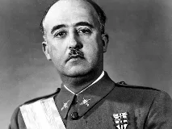
Francisco Francowiki-fr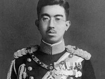
Hirohitowiki-fr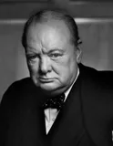
Winston Churchillwiki-fr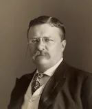
Theodore Rooseveltwiki-fr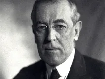
Woodrow Wilsonwiki-fr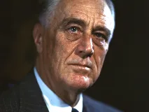
Franklin Delano Rooseveltwiki-fr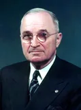
Harry S. Trumanwiki-fr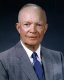
Dwight D. Eisenhowerwiki-fr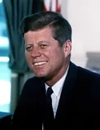
John Fitzgerald Kennedywiki-fr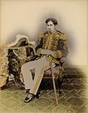
Empereur Meijiwiki-fr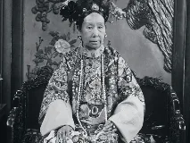
Cixiwiki-fr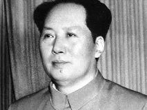
Mao Zedongwiki-fr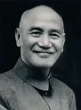
Tchang Kaï-chekwiki-fr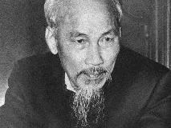
Hô Chi Minhwiki-fr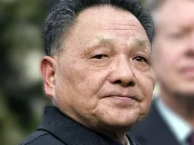
Deng Xiaopingwiki-fr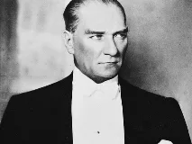
Mustafa Kemal Atatürkwiki-fr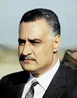
Gamal Abdel Nasserwiki-fr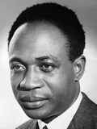
Kwame Nkrumahwiki-fr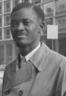
Patrice Lumumbawiki-fr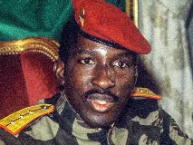
Thomas Sankarawiki-fr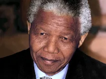
Nelson Mandelawiki-fr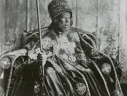
Ménélik IIwiki-fr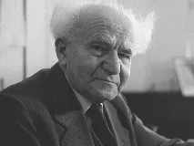
David Ben Gourionwiki-fr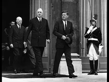
Charles de Gaullememo:chefs_etat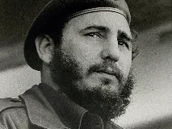
Fidel Castrowiki-fr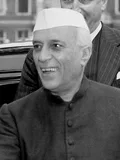
Jawaharlal Nehruwiki-fr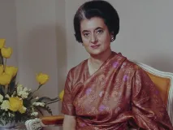
Indira Gandhiwiki-fr
Pol Potbing
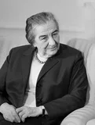
Golda Meirwiki-fr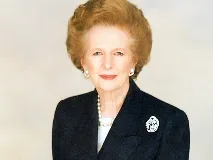
Margaret Thatcherwiki-fr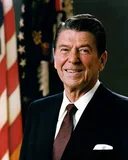
Ronald Reaganwiki-fr
Mikhaïl Gorbatchevwiki-fr
Juan Perónwiki-fr